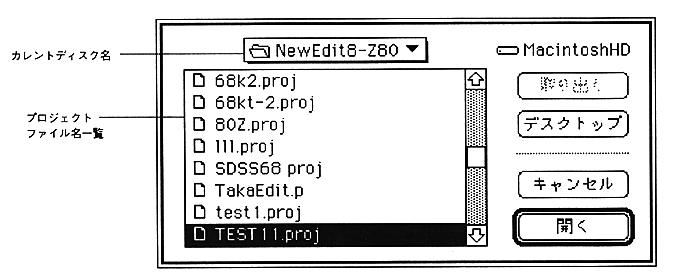

The file name displayed here is limited to the file type 'PROJ'.
-When an object has already been created and the source has not changed ・ When there is an error in the previously assembled file
If an error occurs, subsequent sources are not assembled.
At this time, the source object file where the error occurred is deleted.